İçindekiler
GİRİŞ
Hexagramlar
1. CH’İEN/yaratıcı
 2. K’UN /Alıcı, Kabul Edici
2. K’UN /Alıcı, Kabul Edici
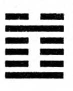3. CHUN /Başlangıçta Çekilen Zorluk
 4. MENG/Gençlik
4. MENG/Gençlik
6. SUNG/Çatışma
7. SHİH/Ordu
8. PI/Birlik.
9. HASÎAO CH’U/Kontrol Altında Tutmak
 10. LU /Adım Atmak, Ayak Basmak
10. LU /Adım Atmak, Ayak Basmak
11. T’Al /Barış
 12. P’I /Uyumsuzluk
12. P’I /Uyumsuzluk
13. T’UNG JEN/Sosyal Yakınlık, Dostluk
 14. TA YU /Fazla Miktarda Varlık
14. TA YU /Fazla Miktarda Varlık
15. CH’IEN/ Alçakgönüllülük, mütevazilik
 16. YU/Heves
16. YU/Heves
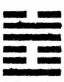17. SUİ/ Devam eden
 18. KU/ Bozulanın Onarımı
18. KU/ Bozulanın Onarımı
 19. LlN/Yönetim
19. LlN/Yönetim
20. KUAN/Görüş açısı
 21. SHIH HO/Isırmak, Diş Geçirmek
21. SHIH HO/Isırmak, Diş Geçirmek
22. PI/Zerafet
 23. PO/Çözülme
23. PO/Çözülme
 24. FU/Geri dönüş
24. FU/Geri dönüş
25. WU WANG/Sadelik
 26. TA CH’U/Dizginlenen Güç
26. TA CH’U/Dizginlenen Güç
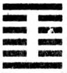27.1/ Beslemek
 28. TA KUO / Aşırı büyüklük
28. TA KUO / Aşırı büyüklük
29. K’AN / Derinlik
30. Lİ / Ateş
 31. HSİEN/Teşvik
31. HSİEN/Teşvik
 32. HENG / Devamlılık
32. HENG / Devamlılık
 33. TUN / Geri çekilme
33. TUN / Geri çekilme
 34. TA CHUANG / Büyük Güç
34. TA CHUANG / Büyük Güç
 35.CHIN /İlerleme
35.CHIN /İlerleme
36. MİNG I / Işığın Kararması
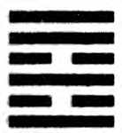37. CHIA JEN / Aile
38. K’UEİ/ Çekimserlik ve Kopukluk
 39. CHIEN/Engelleme
39. CHIEN/Engelleme
40. HSIEH/Özgürlük
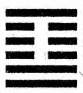41. SUN / Düşüş, Eksilme
42.I / Artış
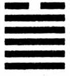43. KUAİ / Kararlılık
 44. KOU / Karşılaşma
44. KOU / Karşılaşma
 45. TS’Uİ/Anlaşma
45. TS’Uİ/Anlaşma
 46. SHENG/Yukarı itme
46. SHENG/Yukarı itme
 48. CHİNG/Kuyu
48. CHİNG/Kuyu
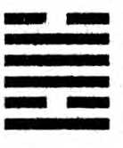49. KO / Devrim
50. TİNG / Kazan
51. CHEN / Uyanma
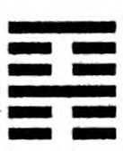52. KEN / Hareketsiz durmak.
 53. CHİEN /Gelişme
53. CHİEN /Gelişme
 54. KUEI MEI/Evlenen taze genç kız
54. KUEI MEI/Evlenen taze genç kız
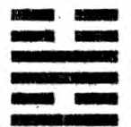55. FENG / Büyüklük, ululuk
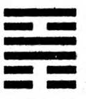56. LU / Yabancı
 57. SUN / içe işleyen rüzgâr
57. SUN / içe işleyen rüzgâr
58. TUİ / Neşe
 59. HUAN/Dağılma
59. HUAN/Dağılma
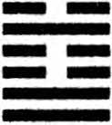60. CHIEH/Kısıtlama, sınır koyma.
61. CHUNG FU/Anlamak (Gerçek)
62. HSIAO KUA / Küçüğün aşırılığı
 63. CHI CHI / Tamamlama
63. CHI CHI / Tamamlama
 64. WEI CHI / Tamamlama Öncesi
64. WEI CHI / Tamamlama Öncesi
EK - Hexagram Tanıtım Kartı
Trigramlar ve Özellikleri
Trigramlar ve Özellikleri